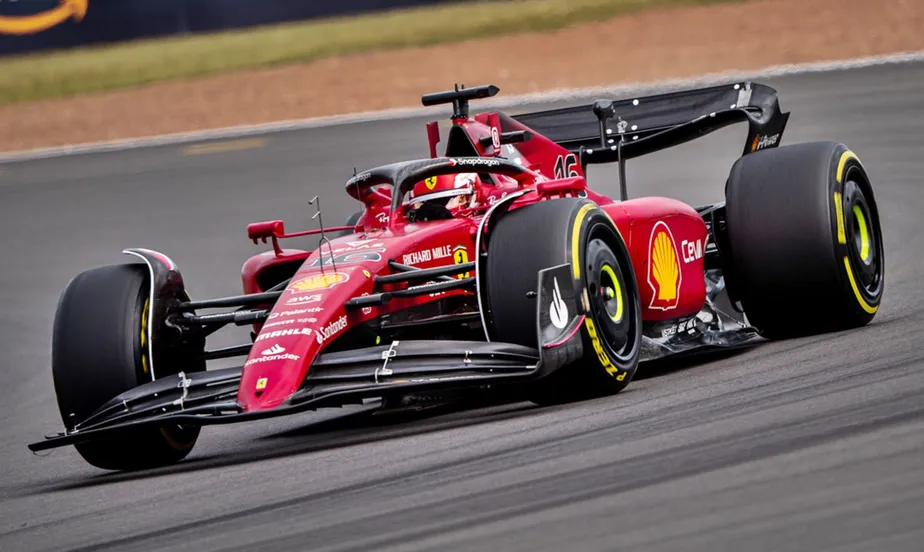
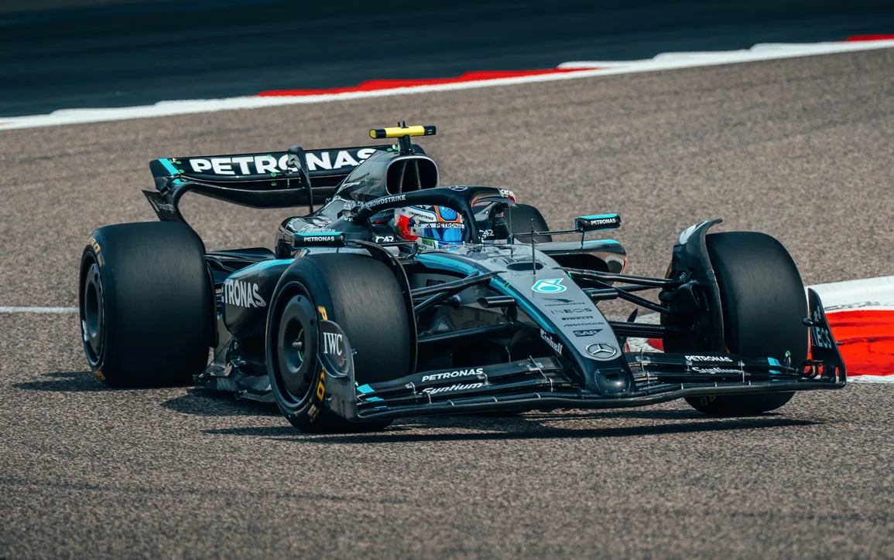
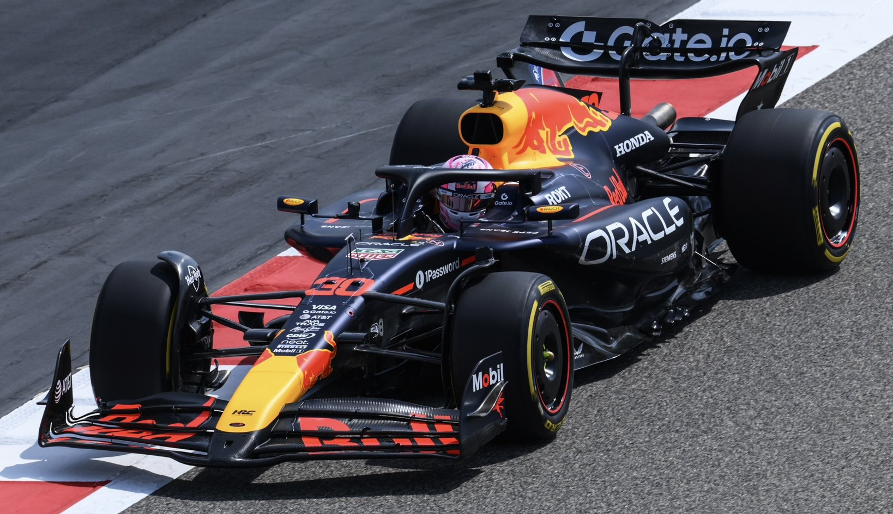
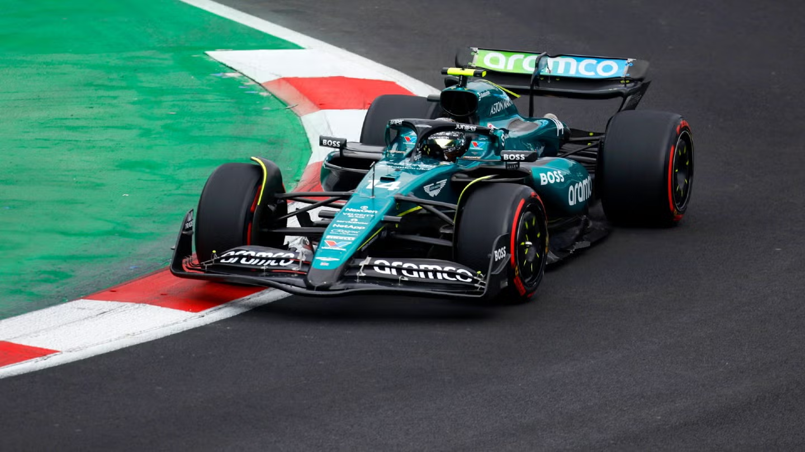

Ferrari
A Scuderia Ferrari é a equipe mais icônica e tradicional da Fórmula 1, presente desde a primeira temporada em 1950. Conhecida por seu carro vermelho e o símbolo do cavalo empinado, representa a paixão italiana pelo automobilismo. A Ferrari já conquistou inúmeros títulos mundiais de construtores e pilotos, sendo casa de lendas como Michael Schumacher. Sua base fica em Maranello, na Itália, onde a equipe também desenvolve seus carros. Mesmo em anos difíceis, a Ferrari segue como uma das mais queridas entre os fãs. Seu legado é sinônimo de história, velocidade e emoção.

Acessar página da equipe
Mercedes
A equipe Mercedes dominou a Fórmula 1 na década de 2010, especialmente com o piloto Lewis Hamilton, ganhando oito títulos consecutivos de construtores. A marca alemã combina engenharia precisa com inovação tecnológica. Sediada no Reino Unido, mas com DNA alemão, a Mercedes é famosa por sua consistência e potência nas pistas. O visual prateado dos carros, que já foi chamado de “Flechas de Prata”, virou símbolo de modernidade e elegância. A equipe também é conhecida pelo uso avançado de dados e estratégias de corrida. Seu sucesso recente consolidou a marca como uma gigante da categoria.

Acessar página da equipe
Red Bull
Fundada em 2005, a Red Bull Racing é uma equipe jovem, mas que rapidamente se tornou uma das mais vitoriosas da F1. Com um espírito arrojado e inovador, conquistou seu primeiro título com Sebastian Vettel em 2010 e voltou ao topo com Max Verstappen nos últimos anos. Seu motor atualmente leva o nome da Honda, e a equipe é conhecida por sua aerodinâmica agressiva. A Red Bull é sediada no Reino Unido, e seu design chamativo com cores vibrantes reflete o estilo ousado da marca de energéticos. É uma equipe que combina marketing forte com excelência técnica.

Acessar página da equipe
McLaren
A McLaren é uma das equipes mais tradicionais da Fórmula 1, fundada por Bruce McLaren na década de 1960. Conhecida por sua inovação e por ter revelado grandes nomes como Ayrton Senna, a equipe conquistou múltiplos campeonatos mundiais. Atualmente, a McLaren está em fase de recuperação e desenvolvimento, buscando voltar ao topo. Seu visual laranja-papaia, usado nos últimos anos, é uma homenagem às cores originais. A sede fica em Woking, na Inglaterra, e é considerada um centro de excelência em engenharia automotiva. McLaren tem uma base de fãs fiel e apaixonada.

Acessar página da equipe
Aston Martin
A Aston Martin voltou à Fórmula 1 como equipe oficial em 2021, mas sua história no esporte remonta à década de 1950. A equipe atual surgiu da transformação da Racing Point, e tem como dono o bilionário canadense Lawrence Stroll. Com carros verdes metálicos e design elegante, a Aston Martin carrega o prestígio da marca de luxo britânica. Em 2023, com Fernando Alonso, conquistou vários pódios e mostrou força nas primeiras corridas. A equipe tem parceria técnica com a Mercedes, inclusive utilizando seus motores. Seu objetivo é se tornar uma potência na F1 nos próximos anos.

Acessar página da equipe
Williams
A Williams é uma das equipes mais tradicionais da Fórmula 1, fundada em 1977 por Sir Frank Williams. Conquistou 9 títulos de construtores e 7 de pilotos, sendo uma verdadeira lenda do esporte nos anos 80 e 90. Foi casa de nomes históricos como Ayrton Senna, Nigel Mansell, Alain Prost e Damon Hill. Nos últimos anos, passou por uma fase difícil, com baixo desempenho e mudanças de gestão, mas segue firme no grid. Hoje, com apoio do grupo Dorilton Capital, busca se reerguer e voltar a brigar no pelotão intermediário. A história da Williams é marcada por paixão, engenharia britânica e perseverança.

Acessar página da equipe